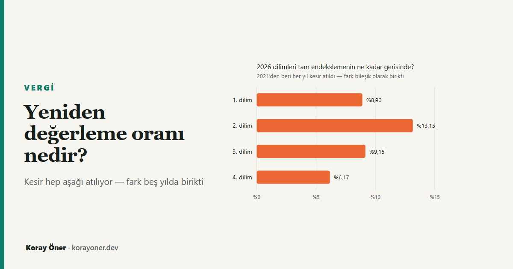

Kısa cevap
Yeniden değerleme oranı enflasyon değildir. Vergi Usul Kanunu mükerrer 298/B'ye göre, yeniden değerleme yapılacak yılın ekim ayında, bir önceki yılın aynı dönemine göre Yurt İçi Üretici Fiyat Endeksinde meydana gelen ortalama fiyat artış oranıdır. Üç yerde tüketici enflasyonundan ayrılır: üretici fiyatlarına bakar, ekim ayına çıpalanır ve nokta değil ortalama karşılaştırmasıdır.
Ve tutarlar o oranla artmıyor. Gelir Vergisi Kanunu mükerrer 123, orana göre hesaplanan tutarların "yüzde 5'ini aşmayan kesirlerinin dikkate alınmayacağını" söylüyor. Kesir atılıyor — yani yuvarlama tek yönlü, hep aşağı.
Bu kural tarifeyi birebir açıklıyor: 2022'den 2026'ya ilan edilen yirmi dilim tutarının yirmisi de bu aritmetiğin çıktısı.
Neden "enflasyon" demek yanlış?
İki ölçüt farklı şeyleri ölçüyor ve farkları küçük değil. Aşağıdaki tabloda her tarife yılına esas alınan yeniden değerleme oranı ile, o tarifenin karşılaması beklenen önceki yıl tüketici enflasyonu yan yana duruyor.
| Tarife yılı | Yeniden değerleme oranı | Önceki yıl TÜFE | Fark |
|---|---|---|---|
| 2022 | %36,20 | %36,08 | +0,12 puan |
| 2023 | %122,93 | %64,27 | +58,66 puan |
| 2024 | %58,46 | %64,77 | −6,31 puan |
| 2025 | %43,93 | %44,38 | −0,45 puan |
| 2026 | %25,49 | %30,89 | −5,40 puan |
İki taraf da öne geçebiliyor. Üretici fiyatları tüketici fiyatlarından hızlı arttığında oran yukarıda kalıyor; yavaşladığında aşağıda. Ayrıca ortalama karşılaştırması olduğu için oran, dönüm noktalarını geç yakalıyor: enflasyon düşerken ortalama hâlâ eski yüksek ayları taşıyor, yükselirken de tersi.
Tarife nasıl belirleniyor?
Gelir Vergisi Kanunu'nun mükerrer 123. maddesi iki adım tanımlıyor. Önce 103. maddedeki dilim tutarları, bir önceki yıl için belirlenen yeniden değerleme oranında artırılıyor. Sonra bu şekilde hesaplanan tutarların yüzde 5'ini aşmayan kesirleri dikkate alınmıyor.
İkinci adım, tutarların neden hep yuvarlak sayılar olduğunu açıklıyor — ve bedelinin kimde kaldığını da.
| Dilim | 2025 tutarı | Oran uygulanınca | İlan edilen | Atılan kesir | Atılan oranı |
|---|---|---|---|---|---|
| 1. dilim | 158.000 | 198.274 | 190.000 | 8.274 | %4,17 |
| 2. dilim | 330.000 | 414.117 | 400.000 | 14.117 | %3,41 |
| 3. dilim | 1.200.000 | 1.505.880 | 1.500.000 | 5.880 | %0,39 |
| 4. dilim | 4.300.000 | 5.396.070 | 5.300.000 | 96.070 | %1,78 |
Tablodaki "atılan kesir" sütunu kanunun izin verdiği pencerenin içinde kalıyor, ama önemli olan şu: hepsi aynı yöne bakıyor. Kanun kesirlerin dikkate alınmayacağını söylüyor; tutarın yukarı tamamlanmasına dair bir hüküm yok. Dolayısıyla ilan edilen tarife, oranın gerektirdiğinin sistematik olarak altında kalıyor.
Bu bir yorum değil. Aynı denetimi bütün yıllara uyguladığımızda kural tarifeyi tek tek üretiyor:
| Tarife yılı | Yeniden değerleme oranı | Kurala uyan dilim | En büyük atılan kesir | Toplam atılan |
|---|---|---|---|---|
| 2022 | %36,20 | 4 / 4 | %3,39 | 16.954 TL |
| 2023 | %122,93 | 4 / 4 | %3,88 | 76.498 TL |
| 2024 | %58,46 | 4 / 4 | %3,24 | 20.882 TL |
| 2025 | %43,93 | 4 / 4 | %4,17 | 71.453 TL |
| 2026 | %25,49 | 4 / 4 | %4,17 | 124.341 TL |
Tek yönlü yuvarlamanın bedeli
Bir yılda atılan kesir küçük görünüyor. Ama her yıl tekrarlandığı ve bileşik işlediği için fark birikiyor. 2021 tarifesinden başlayıp her yıl tam yeniden değerleme uygulansaydı, 2026 dilimleri bugünkünden belirgin biçimde yukarıda olurdu — birinci dilim %8,90, ikinci dilim %13,15 daha yüksek.
Bunun bordrodaki karşılığı şu:
| Ücret düzeyi | Aylık brüt | Ödenen yıllık vergi | Yuvarlamasız tarifeyle | Fazla ödenen |
|---|---|---|---|---|
| 1× asgari ücret | 33.030 | 0 | 0 | — |
| 2× asgari ücret | 66.060 | 86.548 | 82.308 | 4.240 TL |
| 3× asgari ücret | 99.090 | 177.513 | 173.272 | 4.240 TL |
| 5× asgari ücret | 165.150 | 374.204 | 357.874 | 16.330 TL |
| 8× asgari ücret | 264.240 | 727.956 | 711.625 | 16.330 TL |
Tablodaki iki şey dikkat çekiyor. Asgari ücretlide fark sıfır — çünkü asgari ücret istisnası aynı tarifeyle hesaplanıp hesaplanan vergiden düşüldüğü için, asgari ücret matrahının altındaki eşiklerdeki değişiklik kimsenin vergisini değiştirmiyor. Bunu ayrı bir yazıda ölçmüştüm.
İkincisi, fazla ödenen tutar bir dilim bandı içindeki herkes için aynı. Mutlak olarak eşit olan bu tutar, düşük ücretlinin gelirinin daha büyük bir oranına denk geliyor.
Her tutar aynı oranla artmıyor
Şimdiye kadarki her şey gelir vergisi tarifesi içindi. Başka tutarlarda durum daha da ayrışıyor, çünkü kanunlar Cumhurbaşkanına oranları belirli sınırlar içinde değiştirme yetkisi veriyor.
Somut örnek: 2026 motorlu taşıtlar vergisi tutarları %18,95 ile belirlendi, aynı yıl tarifeye esas alınan yeniden değerleme oranı ise %25,49'du. Aradaki 6,54 puan bir hesap hatası değil, bir tercih.
Dolayısıyla kasımda açıklanan oran, "bütün vergiler bu kadar artacak" demek değil. Bir başlangıç noktası: her kalem kendi kanunundaki kural ve yetkiye göre buradan sapıyor.
2027 için ne zaman belli olur?
Oran, ekim ayı verisiyle belirleniyor ve kasım ayında Vergi Usul Kanunu Genel Tebliği ile Resmî Gazete'de ilan ediliyor. Yani veri ekimde tamamlanıyor, ilan kasımda yapılıyor; ilan yeni bir bilgi üretmiyor, hesaplanmış olanı duyuruyor.
Tarife tutarları ise aralık sonunda, Gelir Vergisi Genel Tebliği ile yayımlanıyor. Aradaki bir buçuk ayda dolaşan dilim tablolarının resmî bir dayanağı olmuyor — oran bilindiği için hesaplanabiliyorlar, ama kesirlerin ne kadarının atılacağı ve Cumhurbaşkanı yetkisinin kullanılıp kullanılmayacağı belli değil.
Yöntem, sınırlar ve varsayımlar
Tarife tutarları sitenin tek parametre dosyasından, yeniden değerleme oranları ise dilim kayması yazısının serisinden okunuyor; ikisi de testlerle sabitlenmiş durumda ve bu yazı hiçbirini kopyalamıyor. Tablolardaki her hücre testte yeniden hesaplanıp sayfadakiyle karşılaştırılıyor.
Yazı oranın kendisini hesaplamıyor. Bunun için Yİ-ÜFE'nin aylık endeks serisi gerekir; o veri sitede yok ve tahmin etmek bu sitenin ilkelerine aykırı olurdu. Burada yapılan, ilan edilen orandan tarifenin nasıl türediğini doğrulamak.
"Yuvarlamasız tarife" karşılaştırması bir politika önerisi değil, bir ölçüm aracıdır: kesir atma kuralının birikmiş etkisini görünür kılmak için kurulmuş bir karşı-olgudur. Cumhurbaşkanı yetkisinin kullanıldığı yıllarda gerçek tarife bu karşı-olgudan ayrıca sapabilir.
Yazı vergi danışmanlığı değildir.
Kaynaklar
- 213 sayılı Vergi Usul Kanunu, mükerrer m.298/B — yeniden değerleme oranının tanımı ve Hazine ve Maliye Bakanlığınca ilanı.
- 193 sayılı Gelir Vergisi Kanunu, mükerrer m.123 — had ve tutarların yeniden değerleme oranında artırılması, "yüzde 5'ini aşmayan kesirlerin dikkate alınmaması" ve tutarları yarısına kadar artırma veya indirme yetkisi; aynı maddenin (3) numaralı fıkrası hükmü 103. maddedeki tarifeye de uyguluyor.
- 193 sayılı Gelir Vergisi Kanunu, m.103 — vergi tarifesi.
- Tarife tutarları her yıl Gelir Vergisi Genel Tebliği ile, yeniden değerleme oranı Vergi Usul Kanunu Genel Tebliği ile Resmî Gazete'de yayımlanır.
Sık sorulan sorular
Yeniden değerleme oranı enflasyon mu?
Değil. Üretici fiyatlarına bakar, ekim ayına çıpalanır ve nokta değil ortalama karşılaştırmasıdır. 2026 tarifesine esas alınan oran %25,49 iken önceki yılın tüketici enflasyonu %30,89'du.
Vergi dilimleri bu oran kadar mı artıyor?
Hayır, her zaman daha az. Kanun, hesaplanan tutarların %5'ini aşmayan kesirlerinin dikkate alınmamasına izin veriyor ve kesir yalnızca aşağı atılıyor.
Bu kural tarifeyi gerçekten açıklıyor mu?
Birebir. 2022–2026 arasında ilan edilen yirmi dilim tutarının yirmisi de bu aritmetiğin çıktısı; yazının testi bunu dilim dilim ölçüyor.
MTV de aynı oranla mı artıyor?
2026 için hayır: MTV tutarları %18,95 ile belirlendi, tarifeye esas alınan oran ise %25,49'du.
İlgili araçlar ve yazılar
- Dilim kayması gerçekten oluyor mu? — bu yazı mekanizmayı anlatıyor, o yazı sonucu ölçüyor.
- MTV hesaplama — 2026 tutarları.
- MTV 2026 ne kadar?
- Maaş hesaplama — tarifenin bordroya etkisi.